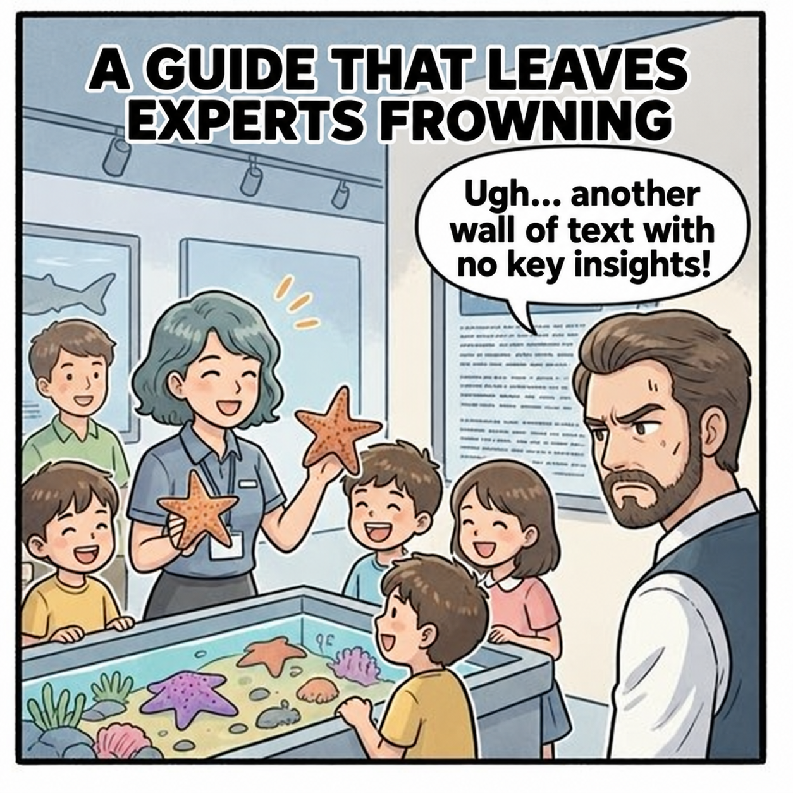
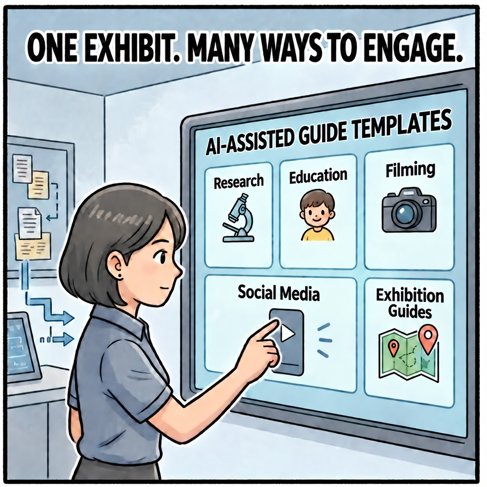
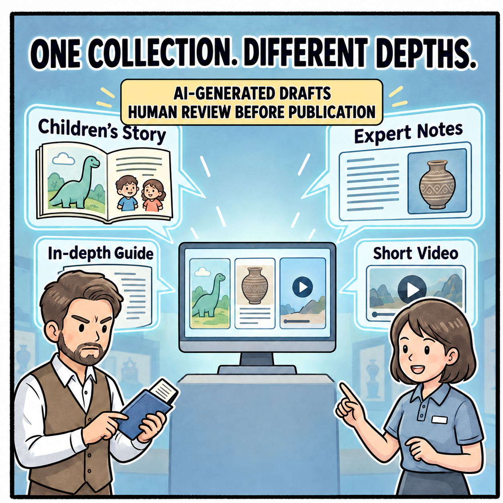
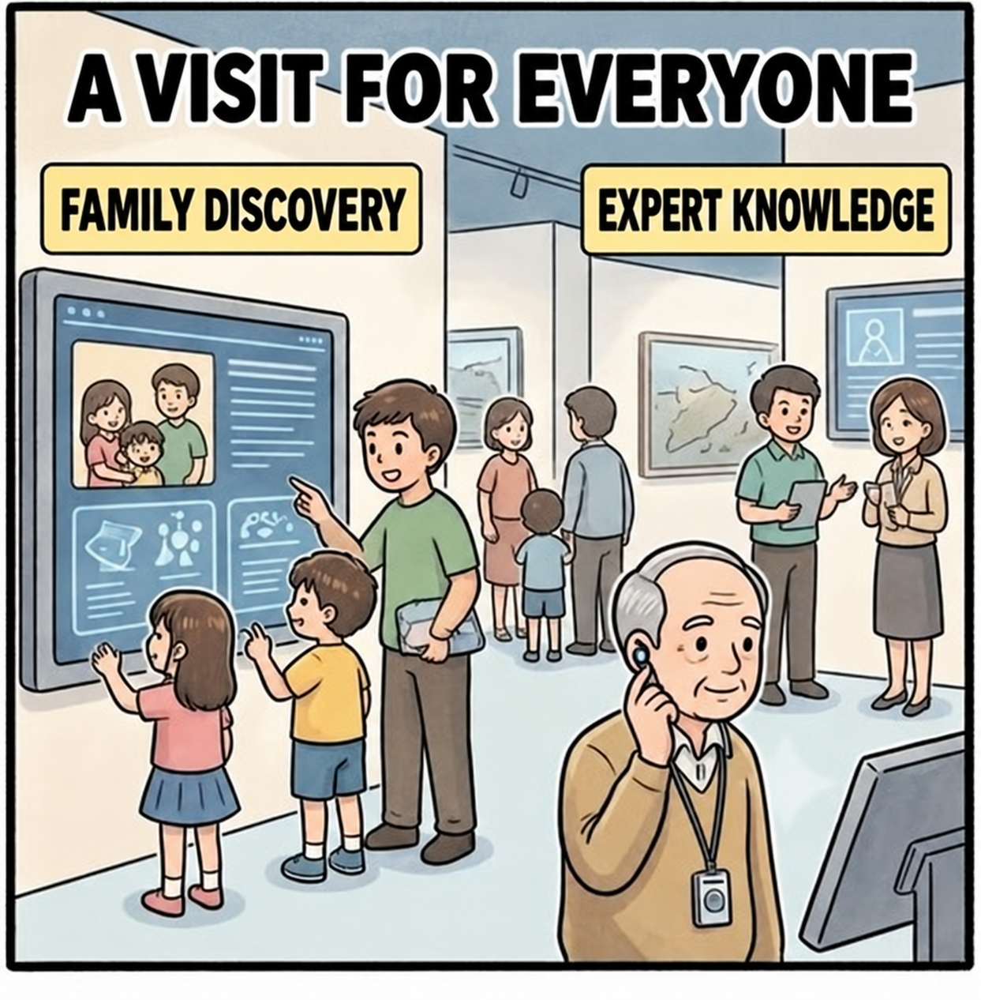

Q2 — Audience-Specific AI Guides
The challenge: exhibition content often misses the needs of students, researchers, and young children.
- Content that is too technical loses the public; content that is too simple loses its science-education value. Museums need a way to tailor information for different audiences.
- Exhibit guides are often static, with limited ways to respond to the current exhibition or visitors’ questions through timely, interactive expert answers.
Expected benefits
- Develop conversational AI guides that support learning and recommend collection items based on visitor interests.
- Use generative AI to turn researchers’ source material into child, adult, and expert guide drafts; subject experts and editors review and approve every version before publication.



